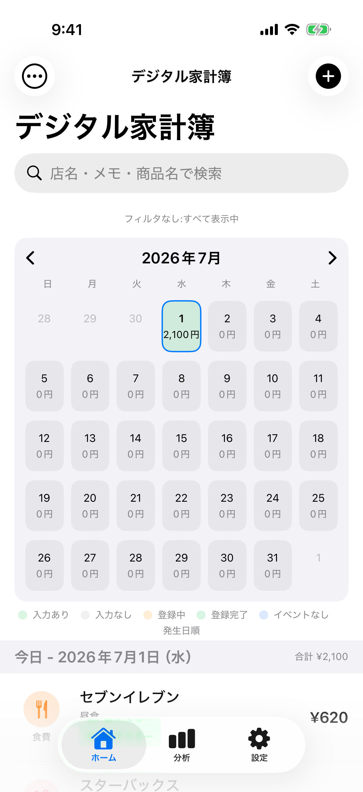

画面構成
画面構成¶
アプリ全体の構造¶
アプリは下部の3つのタブで構成されています。
- 🏠 ホーム — 記録の一覧・検索・追加・印刷の起点
- 📊 分析 — 期間別・カテゴリ別の集計とグラフ
- ⚙️ 設定 — カテゴリ・支払方法・タグの管理、データ管理など
ホーム画面¶

ホーム画面の主な機能¶
| 機能 | 説明 |
|---|---|
| 検索 | 店名・メモ・商品名でリアルタイム検索 |
| 表示モード切り替え | 通常表示とシンプル表示を切り替え可能 |
| ソート順序 | 発生日順と更新順を切り替え可能 |
| 年月日表示 | セクションヘッダーに「2026年1月8日（水）」形式で表示（通常表示）、年の切り替わり時のみ表示（シンプル表示） |
| トップに戻る | 200pt以上下にスクロールすると画面下部にボタンが表示され、タップで一番上まで自動スクロール |
| フィルタ | 期間・カテゴリ・タグ・金額帯・支払方法で絞り込み |
| カレンダー | 月間カレンダーに日別合計金額を表示。状態表示・当日絞り込み・追加操作が可能 |
| 印刷 | 表示中の一覧をPDF形式で印刷・共有 |
| 一括カテゴリ設定 | 複数の支出を選択して一括でカテゴリを設定 |
| 一括タグ追加 | 複数の支出を選択して一括でタグを追加 |
| 一括削除 | 複数の支出を選択して一括削除 |
| 支出追加 | ➕ボタンから新規登録 |
| 履歴から入力 | 新規作成時に過去のデータからコピー |
| 編集 | タップで詳細画面へ |
| 削除 | 左スワイプで個別削除 |
表示モードについて¶
通常表示（デフォルト）： - カテゴリアイコン、店名、カテゴリ名、支払方法、タグをすべて表示 - 詳細な情報を確認したい場合に便利
シンプル表示： - 日付（月/日 + 曜日）、カテゴリカラー、店名、金額のみをコンパクトに表示 - 画面に表示できる明細数が約1.3倍に増加 - 素早くスキャンしたい場合に便利
切り替え方法： 1. 左上の「︙」メニューをタップ 2. 「通常表示」または「シンプル表示」を選択
ソート順序について¶
発生日順（デフォルト）： - 支出が発生した日時の降順で表示 - 時系列で確認したい場合に便利
更新順： - 支出が最後に更新された日時の降順で表示 - 最近編集した明細を素早く見つけたい場合に便利
切り替え方法： 1. 左上の「︙」メニューをタップ 2. 一番上の現在のソート順序をタップ 3. 「発生日順」または「更新順」を選択
カレンダー表示について¶
- ホーム画面上部に月間カレンダーが表示されます
- 各日付にその日の合計金額が表示されます
- 入力がある日とない日で背景色が変わります
- カレンダー状態を設定した日は状態カラーで上書き表示されます
- 日付をタップすると以下の操作を選択できます:
- 当日に移動（当日で絞り込み）
- 手動で追加
- レシートで追加
- 外部アプリ連携
- カレンダー状態を設定
検索機能¶
ホーム画面の検索バーから、支出をリアルタイムに検索できます。
検索対象¶
| 検索対象 | 説明 | 例 |
|---|---|---|
| 店名 | 店舗名の部分一致 | 「セブン」→「セブン-イレブン」 |
| メモ | メモ内容の部分一致 | 「朝食」→ メモに「朝食購入」を含む支出 |
| 商品名 | 明細の商品名の部分一致 | 「牛乳」→ 明細に「牛乳」を含む支出 |
特徴: - 大文字・小文字を区別しません - 入力と同時にリアルタイムで絞り込みます - フィルタと組み合わせて使用できます - 検索バーの表示テキスト: 「店名・メモ・商品名で検索」
印刷・PDF出力機能¶
ホーム画面に表示中の支出一覧をPDF形式で印刷・共有できます。

印刷の手順¶
1. 印刷プレビューを開く
ホーム画面左上のメニュー（…）→「印刷」を選択
2. 印刷スタイルを選択
| スタイル | 説明 |
|---|---|
| UI風 | カテゴリアイコン・色付きインジケータを含むリッチな表示 |
| シンプル | テキストのみのシンプルな表示（白黒印刷に最適） |
3. 表示オプションを設定
| オプション | 説明 | デフォルト |
|---|---|---|
| メモを表示 | メモ欄を印刷に含める | ON |
| タグを表示 | タグを印刷に含める | ON |
| 支払方法を表示 | 支払方法を印刷に含める | ON |
| 余白サイズ | 狭い（12.7mm）/ 標準（19mm）/ 広い（25.4mm） | 標準 |
| フォントサイズ | 小（9pt）/ 中（11pt）/ 大（13pt） | 中 |
4. 印刷・共有を実行
• iOS: 「印刷」でAirPrint、「共有」でメール・ファイル等に送信
• macOS: 「印刷」でプリンター選択、「保存」でPDFファイルとして保存
特徴: - A4サイズのPDFを自動生成 - ヘッダー・フッター・ページ番号付き - ホーム画面の表示モード（通常表示/シンプル表示）を自動反映 - フィルタ・検索で絞り込んだ状態の一覧がそのまま印刷対象 - スタイル切り替え時にプレビューを即時再描画
分析画面¶

分析画面では、期間と取引種別を選び、サマリーカードとカテゴリ別グラフで支出傾向を確認できます。詳しくは「分析機能の使い方」を参照してください。